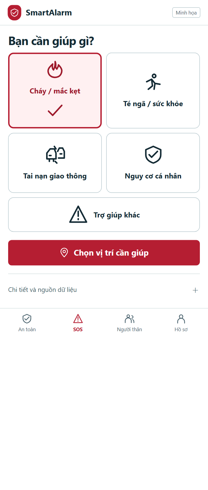
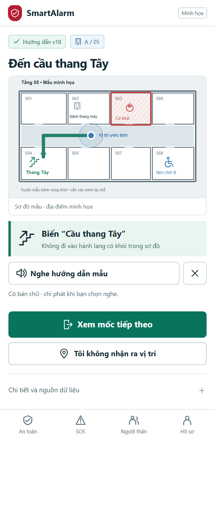
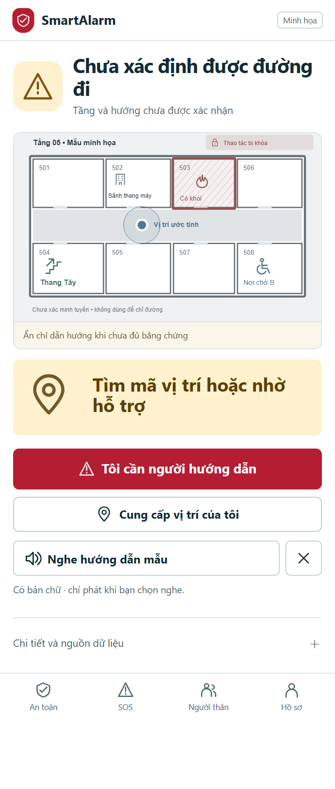
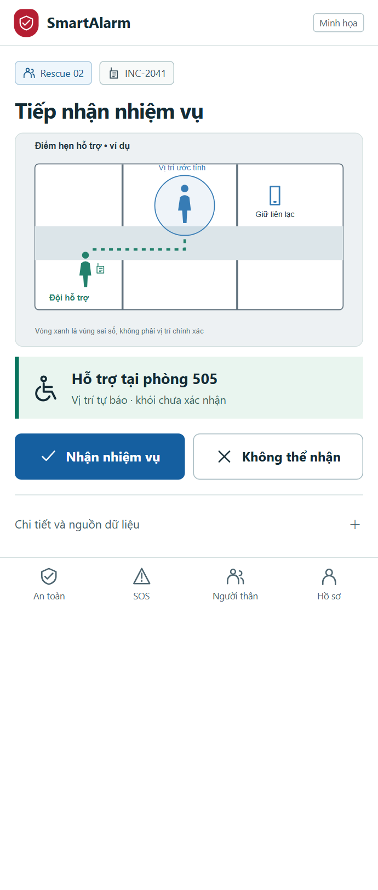
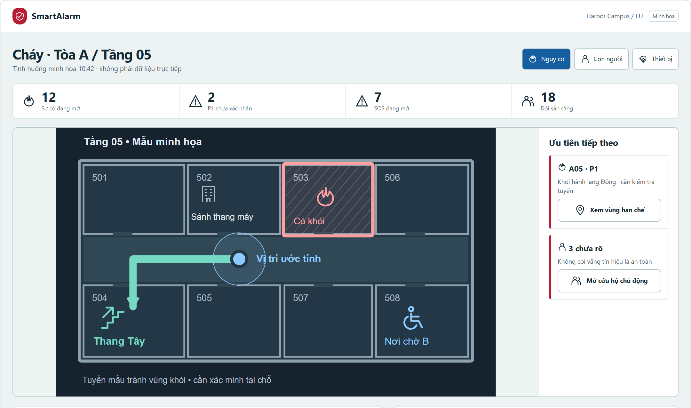
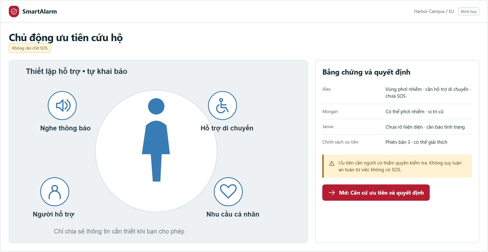
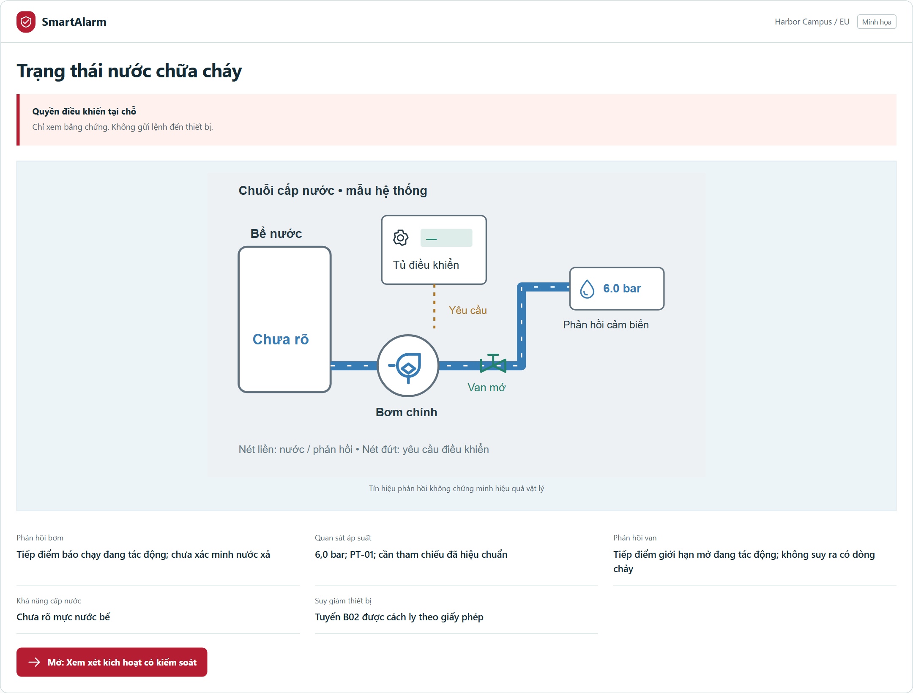

01 · Yêu cầu bằng hình
Chọn tình huống, rồi xác nhận vị trí và số người.
Thiết kế lại toàn bộ 241 màn hình theo bối cảnh sử dụng. Hình ảnh mang thông tin vận hành; chữ ngắn giúp xác nhận ý nghĩa.

Chọn tình huống, rồi xác nhận vị trí và số người.

Sơ đồ, vùng nguy hiểm và mốc cầu thang cùng một màn hình.

Không bịa hướng đi. Chuyển sang xác minh hoặc yêu cầu giúp.

Nhiệm vụ gắn vị trí, năng lực và nhu cầu hỗ trợ.

Chọn lớp nguy hiểm, con người hoặc thiết bị. Luôn tách điều đã biết khỏi điều chưa xác nhận.


Đây là thiết kế và prototype tương tác với dữ liệu minh họa. Kiểm tra trình duyệt, liên kết và bố cục được ghi riêng; kiểm thử khả dụng với người dùng và diễn tập hiện trường vẫn là cổng nghiệm thu cần thực hiện.
Đọc rà soát và phương pháp nghiệm thu →Bộ chọn vùng với mẫu ngôn ngữ và xem trước cỡ chữ
A02Nhận diện tổ chức cạnh lối vào passkey và SSO
A03Phương thức xác minh và ô mã với phản hồi số lần thử
A04Thẻ tổ chức ghi vùng dữ liệu và vai trò trước khi vào
A05Chọn cách khôi phục và biên nhận đích đã che
A06Danh tính lời mời, phạm vi vai trò và hạn dùng
A07Các công tắc quyền riêng biệt kèm biểu tượng mục đích
A08Hình thiết bị với nhãn phiên hiện tại và hoạt động cuối
A09Thiết bị được chọn và xác nhận tác động thu hồi
A10Xem trước trợ năng cạnh ngôn ngữ và chuyển động
C01Tóm tắt nguy cơ tại khu vực trên báo an gia đình và kết nối
C02Biểu tượng nguy cơ, nơi ảnh hưởng và một chỉ dẫn có nguồn
C03Sơ đồ tầng có vùng bất định vị trí, hành lang chặn và nơi lánh nạn
C04Điều khiển âm thanh lớn cạnh bản chữ dễ đọc
C05Biểu tượng cháy, y tế, va chạm và đe dọa kèm nhãn ngắn
C06Ghim vị trí có biên sai số và chỉnh sửa thủ công
C07Xem lại SOS với nhu cầu, vị trí và người nhận trước gửi
C08Các bước biên nhận tách chờ gửi, máy chủ nhận và người tiếp nhận
C09Hội thoại sự cố hiển thị vai trò người gửi và trạng thái từng tin
C10SOS hiện có cạnh cập nhật đề xuất và tác động hủy
C11Ba lựa chọn trạng thái cá nhân rõ ràng kèm độ chính xác chia sẻ
C12Báo cáo cá nhân và biên nhận riêng theo nhóm nhận
C13Hộp cảnh báo theo mức khẩn có nguồn và hết hạn
C14Bản đồ nguy cơ gần kèm danh sách và bất định khoảng cách
C15Ranh giới khuyến cáo và thời hạn cạnh độ chắc chắn nguồn
C16Thẻ nơi trú so sánh trợ năng, chỗ hiện có và khoảng cách
C17Sơ đồ lối vào nơi trú và trạng thái tiếp cận, sức chứa
C18Nội dung gói ngoại tuyến có phiên bản và tuổi đồng bộ
C19Tóm tắt thành viên nhóm và số chưa báo an
C20Hội thoại nhóm kèm bối cảnh báo an thành viên
C21Xem trước thành viên và phạm vi chia sẻ nhóm
C22Bảng thành viên tách tự báo an và chưa rõ
C23Thứ tự liên hệ với biểu tượng kênh và xem trước chia sẻ
C24Kết nối thiết bị đeo và chuỗi tăng cấp kiểm tra té ngã
C25Kiểm tra té ngã có nút cần giúp, bỏ qua lớn và thời gian còn
C26Phác họa hướng đường với nhập hướng và thương tích thủ công
C27Điều khiển trợ giúp kín đáo rõ trạng thái âm thanh và rung
C28Lịch sử yêu cầu tách đang mở, đã xử lý và chờ biên nhận
C29Xem trước phạm vi riêng tư với vị trí trực tiếp và xuất, xóa
C30Tiến trình yêu cầu dữ liệu và đích nhận đã xác minh
R01Danh mục sẵn sàng của đội với năng lực và ca trực
R02Hàng đợi nhiệm vụ theo khẩn cấp và hạn tiếp nhận
R03Danh tính nhiệm vụ, vị trí người và nguy cơ trên nhận, từ chối
R04Bản đồ tiếp cận đích có hiệu lực tuyến và thao tác báo đến
R05Sơ đồ hiện trường có vùng chặn, SOS mở và vị trí đồng đội
R06Phiếu quan sát theo người với tình trạng và hỗ trợ
R07Dòng bàn giao nhiệm vụ tách người nhận chấp thuận
R08Bằng chứng hoàn thành và xác nhận đội tiếp nhận
R09Kênh đội có danh tính chỉ huy và dấu tin chờ gửi
R10Xem trước bằng chứng gắn sự cố và che thông tin riêng
R11Hộp chờ gửi nhóm theo chờ, thử lại và xung đột
R12Quan sát cục bộ cạnh thay đổi máy chủ và giữ ghi chú
O01Dải sự cố ưu tiên, bảng năng lực và bản đồ khu vực
O02Bản đồ nhiều sự cố với độ mới từng lớp
O03Hàng đợi bằng chứng tín hiệu có nghi trùng và chất lượng nguồn
O04Bản đồ sự cố cạnh SOS mở, người chưa rõ và người phụ trách
O05Khung bằng chứng có thời điểm, độ tin cậy và vị trí
O06Xem trước tạo sự cố nối loại, mức độ và người phụ trách
O07Phả hệ sự cố đối chiếu với tác động gộp, tách
O08Các làn đội thể hiện năng lực, nhiệm vụ và trạng thái nhận
O09Xem trước phân công gắn đúng đội, nhiệm vụ và hạn đáp
O10Mốc phản ứng theo thời gian với biên nhận từng nguồn
O11Bảng người tách chưa rõ, được giúp và tự báo an
O12Nhu cầu trợ giúp, phạm vi đồng ý và vị trí cuối
O13Soạn cảnh báo cạnh vùng ảnh hưởng và xem trước chỉ dẫn
O14Phạm vi người nhận và so sánh độ phủ kênh, ngôn ngữ
O15Đúng phiên bản cảnh báo và tách người soạn, duyệt
O16Phễu giao nhận tách nhà cung cấp nhận và con người xác nhận
O17Nhóm nhận lỗi cạnh đề xuất kênh dự phòng
O18Sơ đồ thiết bị đích với liên động và bản lệnh có hạn
O19Dòng lệnh tách biên nhận truyền tải và tác động vật lý
O20Điều kiện chặn đóng nêu SOS mở và người chưa xác minh
O21Biểu đồ thời gian phản ứng, thiếu giao nhận và người cải tiến
O22Việc cải tiến với người chịu trách nhiệm và hạn
O23Lịch diễn tập tách rõ môi trường thực
O24Bảng tiến trình diễn tập có trạng thái cách ly thiết bị
O25Chuyển trách nhiệm ca với việc chưa hoàn tất
O26Bảng sức chứa nơi trú gồm chưa rõ và báo cáo hết hạn
O27Sửa nơi trú cạnh xem trước sức chứa và hiệu lực
O28Hàng đợi khuyến cáo vùng có nguồn và bản thay thế
O29Chuỗi thông điệp CAP có tham chiếu sửa, hủy và hết hạn
O30Dòng kiểm toán có người thao tác, phạm vi và sự kiện
S01Bản đồ và danh bạ cơ sở có ranh giới vùng
S02Cây tòa, tầng, vùng với bối cảnh không gian được chọn
S03Đường dẫn vị trí cha cạnh tọa độ và xem trước tầng
S04Khung mặt bằng có lối ra, nơi lánh nạn và khác biệt phiên bản
S05So sánh phiên bản mặt bằng với trạng thái công bố, nháp
S06Danh mục thiết bị theo chức năng vật lý và sức khỏe
S07Sơ đồ thiết bị với bằng chứng nhịp sống, chứng chỉ, firmware
S08Chuỗi đăng ký nối số máy, cơ sở và năng lực khai báo
S09Ô camera có kiểm quyền, thời điểm và trạng thái mất nguồn
S10Cửa sổ bảo trì cạnh bản đồ phủ dự phòng
S11Danh sách quy tắc có phiên bản, loại nguy cơ và phạm vi
S12Luồng điều kiện, hành động cạnh nhãn chỉ mô phỏng
S13Lưới kết quả ca thử có bằng chứng gộp sai
S14Xu hướng chất lượng mô hình có nguồn mẫu và sai lệch
I01Danh mục kết nối theo năng lực sự kiện, khuyến cáo, điều khiển
I02Luồng cấu hình nối điểm cuối, vùng và năng lực
I03Ánh xạ nguồn, đích có đơn vị và làn trường chưa rõ
I04Ma trận thử hợp đồng tách mẫu được nhận và bị từ chối
I05Làn sức khỏe kết nối có trễ, lỗi và tuổi dữ liệu
I06Đối chiếu payload lỗi và điều kiện phát lại
I07Lưới phạm vi API với thông tin bí mật che và hết hạn
I08Sơ đồ webhook có chữ ký và chính sách thử lại
I09Ranh giới chia sẻ đối tác với lưu giữ và trạng thái duyệt
I10Dòng trao đổi có phạm vi payload và mã biên nhận
I11Thẻ sẵn sàng đội bay có pin, khả dụng và quyền phi công
I12Rào địa lý nhiệm vụ với phi công, thời tiết và thẩm quyền
I13Cổng trước bay có kế hoạch mất nối và duyệt phi công
I14Dải đo xa có cảnh báo cũ và chủ quyền điều khiển cục bộ
I15Dòng bằng chứng nhiệm vụ có nhật ký bay và phi công
T01Tóm tắt sức khỏe tổ chức với vùng và phân bổ năng lực
T02Ranh giới vùng tổ chức cạnh ngôn ngữ và múi giờ
T03Danh sách thành viên có vòng đời lời mời và vai trò
T04Ma trận quyền theo cơ sở có năng lực bị cấm rõ
T05Thang tăng cấp có thời điểm đổi người và độ phủ lịch
T06Xem trước tin đa ngôn ngữ với biến và dự phòng
T07Cây loại nguy cơ nối bước kịch bản nháp
T08Chuỗi bước kịch bản có phiên bản, timeout và trách nhiệm
T09Dòng lưu giữ có ngoại lệ giữ pháp lý
T10Xem trước xuất dữ liệu có xác minh và loại trừ bằng chứng
T11Sự kiện kiểm toán bất biến nối người, đối tượng và trace
T12Sơ đồ sức khỏe phụ thuộc và sẵn sàng khôi phục
T13Danh mục khôi phục với bằng chứng xác minh từng bước
T14Biểu đồ dùng năng lực với phần dành khẩn cấp
T15So sánh chính sách hàng đợi với dự trữ P1 và tác động giới hạn
T16Biểu đồ phân bố tách trung vị, P95 và thiếu biên nhận
T17Xem trước lịch báo cáo với múi giờ và chia sẻ người nhận
X01Biên nhận SOS lưu cục bộ nêu rõ chưa có máy chủ nhận
X02Nhập vị trí thủ công cạnh giải thích quyền chưa có
X03Màn không sự cố kèm bằng chứng độ phủ và thiết bị chưa rõ
X04Chọn lại tổ chức mà không lộ đối tượng bị từ chối
X05Bảng mất dịch vụ với tuổi nội dung lưu và đường thay thế
X06So sánh bản cục bộ, máy chủ giữ sửa chưa lưu
X07Truy vấn và bộ lọc đang dùng cạnh nút đặt lại
X08Bảng hết phiên giải thích khôi phục nháp được bảo vệ
X09Dải dữ liệu cũ ghi tuổi nguồn và lệnh không khả dụng
X10Xem trước tệp bị từ chối với lý do và thay thế hợp lệ
G01Sơ đồ vùng vận hành với ranh giới cư trú dữ liệu
G02Trạng thái sao chép và kỷ nguyên writer của vùng
G03Dòng diễn tập khôi phục với RPO, RTO mục tiêu và bằng chứng
G04Lưới chứng minh khôi phục tách fencing và bền vững dữ liệu
G05Kế hoạch phụ thuộc cấp tổ chức và ranh giới cách ly
G06Sơ đồ vòng đời tổ chức với cổng di chuyển, xóa
G07Yêu cầu hỗ trợ hiện phạm vi tối thiểu và hết hạn
G08Duyệt hỗ trợ đối chiếu người yêu cầu và phạm vi cấp
G09Ma trận tương thích bản phát hành, schema và phiên bản mobile
G10Danh mục cổng phát hành với khả năng quay lui và xu hướng SLO
G11Hàng đợi tín hiệu bảo mật với ranh giới tin cậy ảnh hưởng
G12Dòng ngăn chặn thể hiện phơi nhiễm còn lại và bằng chứng
D01Sơ đồ tài nguyên lập trình tách sandbox và thực
D02Hai khung yêu cầu, phản hồi với phạm vi và idempotency
D03Kết quả sandbox tách HTTP, biên nhận bền vững và trace
D04Cây phiên bản schema có tương thích và đánh dấu bỏ dùng
D05Manifest năng lực kết nối với đối chiếu kiểm tra
D06Ma trận tình huống tuân thủ có bảo mật và quá tải
D07Dòng thử lại webhook có kết quả giao chính xác
D08Dòng chồng lấp khóa với xem trước xoay không lộ bí mật
L01Lưới độ phủ ngôn ngữ nêu nội dung khẩn còn thiếu
L02Bộ soạn nguồn, dịch song song có biến được bảo vệ
L03Kiểm tra khớp phiên bản văn bản, biến và bản chữ giọng
L04Mẫu phát âm cạnh bản chữ chính xác và dự phòng
L05Cây dự phòng ngôn ngữ nêu hành vi khi thiếu nội dung khẩn
L06So sánh thuật ngữ tách an toàn, chưa rõ và SOS
C31Danh sách nhóm với trạng thái lời mời và quyền chia sẻ
C32Xem trước lời mời với người nhận, vai trò và quyền vị trí
C33Phạm vi báo cáo hội thoại và tác động chặn lên cảnh báo
C34Tùy chọn thông báo xã hội, an toàn và kín đáo riêng
O31Kho sự cố đóng giữ nguyên lịch sử gốc
O32Xem trước mở lại với người phụ trách mới và bằng chứng giữ
O33Xem trước trao đổi đối tác có trường chia sẻ và thẩm quyền
O34Hàng đợi trợ năng ghép nhu cầu chức năng với đội đủ năng lực
C35Chỉ dẫn mốc tiếp theo trên tuyến tầng và dải chất lượng vị trí
C36Một bước điều hướng có hình mốc và nhãn tin cậy hướng
C37Tuyến cũ bị thu hồi cạnh tuyến thay thế được duyệt và lý do
C38Bảng tầng, hướng chưa rõ với nhập vị trí và yêu cầu hỗ trợ
C39Ranh giới nguy cơ ngoài trời, đích đến và đoạn đường chưa rõ
C40Mẫu giọng đọc, tốc độ và xem trước chế độ kín đáo
P01Bản đồ phủ loa có vùng thiếu và bối cảnh sự cố
P02Xem trước chữ, âm thanh thông báo gắn vùng và hết hạn
P03Đúng phiên bản tin với loa chọn và thứ tự ngôn ngữ
P04Tiến trình phát tách bộ điều khiển nhận và nghe được
P05Chuỗi nguồn, mạng, ampli loa với tuổi tự kiểm
P06Phiên micro trực tiếp với vùng chọn và dừng rõ ràng
P07Phạm vi nhiệm vụ loa di động với quyền phi công
P08Thư viện âm ngôn ngữ với duyệt phát âm và bản chữ
P09Ngăn ưu tiên phân xử thể hiện ưu tiên cục bộ và mất nối
S15Đồ thị thoát hiểm có loại nút, cạnh và đường không tiếp cận
S16So sánh kịch bản tuyến chặn, chưa rõ và xe lăn
O35Sửa đa giác nguy cơ với đoạn tuyến ảnh hưởng và hết hạn
O36Phân phối phiên bản chỉ dẫn tách thu hồi và biên nhận
H01Hồ sơ nhu cầu chức năng với biểu tượng di chuyển, giao tiếp
H02Xem trước chia sẻ nhu cầu chức năng và ghi chú y tế riêng
H03Sơ đồ quan hệ người chăm sóc với quyền chờ và hết hạn
H04Đối chiếu chủ thể, người chăm sóc và phạm vi hết hạn
H05Hồ sơ người phụ thuộc có liên kết thiết bị và tuổi xem xét
H06Đối chiếu hồ sơ chỉ nguồn và trách nhiệm duyệt
H07Danh bạ hỗ trợ với cột nhu cầu chức năng giới hạn theo vai trò
H08Hàng đợi cứu hộ chủ động với lý do ưu tiên giải thích được
H09Bằng chứng phơi nhiễm, tự thoát cạnh quyết định ưu tiên con người
H10Ma trận hiện diện tách quan sát, dự kiến và chưa rõ
H11Hồ sơ y tế hạn chế có mục đích truy cập và nhật ký chia sẻ
H12Quan sát an sinh có kết quả liên hệ và người tiếp theo
Q01So sánh độ phủ, sức khỏe nguồn GNSS, BLE, UWB, QR
Q02Lịch sử vị trí có độ tin cậy tầng và dấu nguồn mâu thuẫn
Q03Hình tham chiếu hiệu chuẩn có xem trước sai số dư
Q04So sánh tuyến ứng viên với phương án loại và ràng buộc
Q05Ma trận đánh đổi tuyến nêu bất định và duyệt con người
Q06Tóm tắt AI nối bằng chứng với thời điểm và ranh giới quyền
Q07Đối chiếu tuyên bố, bằng chứng, chưa rõ trước quyết định
Q08Kết quả đánh giá căn cứ, chèn lệnh và lộ dữ liệu
Q09Xem trước triển khai phiên bản mô hình, prompt với dự phòng vùng
Q10Kịch bản đám đông, lối chặn mô phỏng theo nhóm di chuyển
F01Sơ đồ hệ vật lý thể hiện thẩm quyền bộ điều khiển và tuổi chứng cứ
F02Danh mục bộ điều khiển có model, giao thức và năng lực xác minh
F03Ma trận thao tác cho phép, cấm cạnh ghi đè cục bộ
F04Ánh xạ địa chỉ tín hiệu sang nghĩa với cực tính và chất lượng
F05Chồng vùng vật lý, nguồn nêu sai khác tọa độ và độ phủ
F06Đồ thị nguyên nhân, tác động có thẩm quyền và cổng ngăn
F07Thẻ nguồn sự kiện vật lý nối bằng chứng quan sát và sự cố
F08Sơ đồ hệ nước tách phản hồi bơm, áp lực và van
F09Cổng điều kiện nhả với đúng thiết bị và yêu cầu hết hạn
F10Bản lệnh bất biến với người yêu cầu, duyệt và ranh giới thực thi
F11Dòng biên nhận so với phản hồi vật lý có kết quả chưa rõ
F12Đối soát kết quả chưa rõ bằng đọc lại và bằng chứng hiện trường
F13Bàn giao điều khiển cục bộ thể hiện lease xa và người nhận
F14Bản đồ suy giảm với biện pháp bù, giấy phép và hết hạn
F15Chuỗi nghiệm thu có cách ly thử và điểm chứng kiến
F16So sánh tác động vật lý dự kiến, quan sát và lỗi chèn
F17Phạm vi chứng chỉ đối chiếu vật tư lắp và giới hạn
F18Danh mục phục hồi có suy giảm còn lại và bằng chứng duyệt
F19Phạm vi nhiệm vụ thiết bị cứu hộ có người đủ chuẩn và giới hạn
F20Cổng tiếp nhận kết nối hãng về khóa, nhập và kích hoạt
BMS01Chuỗi BMS → edge → SmartAlarm; ma trận khả năng nằm cạnh hồ sơ định danh.
BMS02Topology native point → equipment → served zone → route edge, bảng ánh xạ và bằng chứng riêng.
BMS03So sánh native condition và incident trên cùng màn; timeline nhận → liên kết → native ACK → kết thúc cứu hộ tách riêng.
BMS04Priority ladder, nguồn đang thắng, demand/controller report/physical feedback thành ba khối; local override nổi bật.
BMS05Diff trước/sau đặt cạnh nhau; unit/type thay đổi tô cảnh báo; graph phụ thuộc rule và route phía dưới.
BMS06Heatmap chất lượng theo zone có hatch stale, ba queue alarm/telemetry/history và phép tính request budget.
BMS07Swimlane edge cũ → journal/cursor → edge dự phòng; checklist bằng chứng và khóa writer hiển thị riêng.
BMS08Đường causation panel → BMS → SmartAlarm → object writeback; đoạn echo có màu/nhãn khác, raw receipts giữ nguyên.